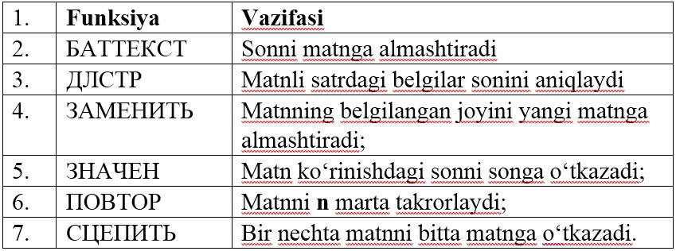
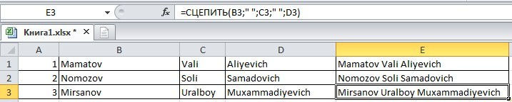
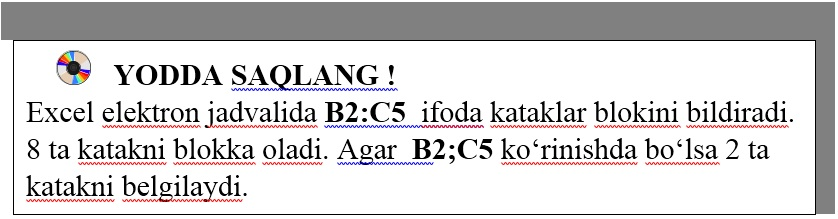

9-DARS. MATNLI FUNKSIYALAR
MS Excel 2010 da kataklardagi matnlar bilan ishlash uchun maxsus funksiyalar mavjud.
Bular quyidagilar:

1-mashq. Uchta katakda o‘quvchilarni familiyasi, ismi, otasining ismi yozilgan ma’lumotlarni bitta katakka birlashtirish.
Bajarish: Ushbu masalani yechishning ikki xil usuli mavjud:
Birinchi usul:
B1 katakka o‘quvchining familiyasi, C1 katakka ismi, D1 katakka otasining ismi kiritiladi;
E1 katakka ushbu formula =СЦЕПИТЬ(B1;" ";C1;" ";D1) kiritilib, Enter tugma bosiladi;
qolgan kataklarga ushbu formula nusxa ko‘chiriladi. Natijada quyidagi oyna hosil bo‘ladi:

Ikkinchi usul:
Jadvalni yuqoridagi tartibda to‘ldirib olamiz;
E1 katakka ushbu formula =B1&" "&C1&" "&D1 kiritilib, Enter tugma bosiladi.
Agar o‘quvchining familiyasi Лист1 varag‘ining B1 katagida, ismi Лист2 varag‘ining B1 katagida, otasini ismi Лист3 varag‘ining B1 katagida berilgan bo‘lib, ushbu ma’lumotlarni Лист4 varag‘ida hosil qilish uchun istalgan katakka ushbu formula =СЦЕПИТЬ(Лист1!B1;"";Лист2!B1;" ";Лист3!B1) kiritilib, Enter tugma bosiladi.


1. Matnli funksiyalarning vazifalarini tushuntiring?
2. C ustunda o‘quvchilarning familiyasi, ismi, otasining ismi berilgan. D ustunda o‘quvchilarning tug‘ilgan yili berilgan. Ularni E ustunga birlashtiring.

1. ДЛСТР funksiyasi yordamida “O‘zbekiston – mustaqil Vatan” matnida nechta belgi borligini aniqlang.